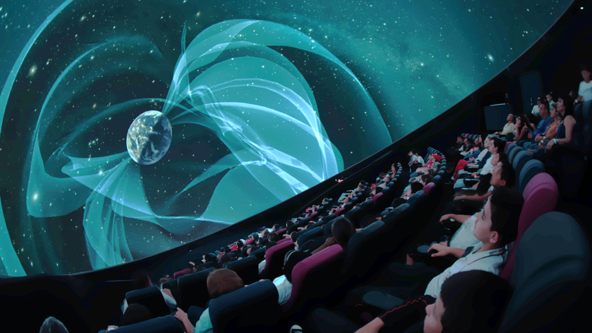
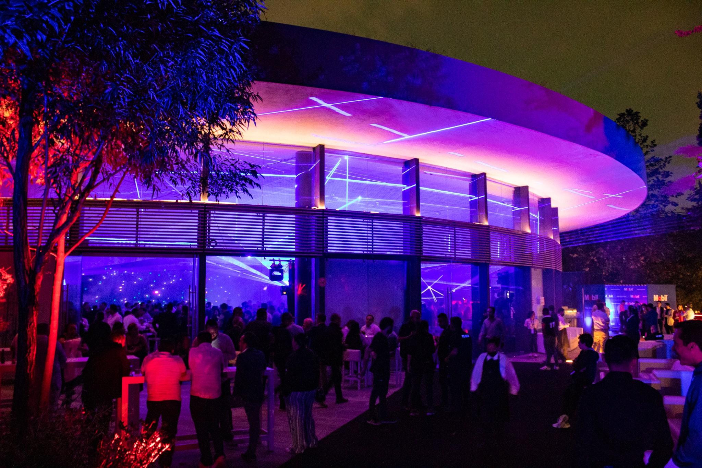

Aprender Jugando

Exploración Creativa

Diversión Educativa
Aventuras Interactivas
Sumérgete en un universo de aprendizaje interactivo y diversión en el Papalote Museo del Niño. Diseñado para inspirar la curiosidad y la creatividad, este museo ofrece experiencias educativas emocionantes para niños de todas las edades.
Desde exposiciones interactivas hasta actividades creativas, el Papalote Museo del Niño es el lugar perfecto para que los más pequeños exploren, descubran y aprendan a través del juego.
El Papalote Museo del Niño ofrece una variedad de actividades educativas y recreativas. Aquí algunas sugerencias:
aprendizaje interactivo
creatividad
diversión en familia
actividades para grupos escolares